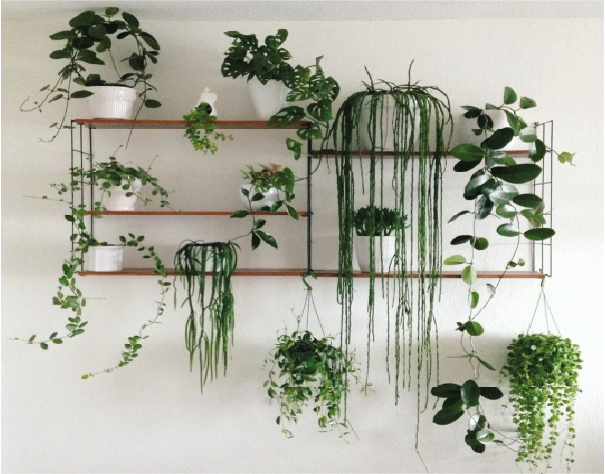

Secretos para mantenerlas siempre radiantes
Luz: Cantidad según la especie (ej: Potus tolera sombra, Columnea necesita luz indirecta). Riego: Evitar encharcamientos, frecuencia según época del año. Humedad: Trucos para plantas tropicales (bandejas con agua o humidificadores). Poda: Cómo y cuándo hacerla para estimular el crecimiento. Advertencia: Señales de que algo va mal (hojas amarillas, raíces podridas). |
 |